STRIDIAN / MHC 2024
A call from the coast
Stand with
Maori.
We are Team Maori, bringing our story, spirit and strength to the Stridian competition by MHC, University of Moratuwa.
Scroll to see the team
Your support matters
One like.
One more step.
Every reaction helps our team move forward. Like the post, follow the Mora Hiking Club page, and help Team Maori carry the energy of the coast into Stridian.
Support Team Maori ↗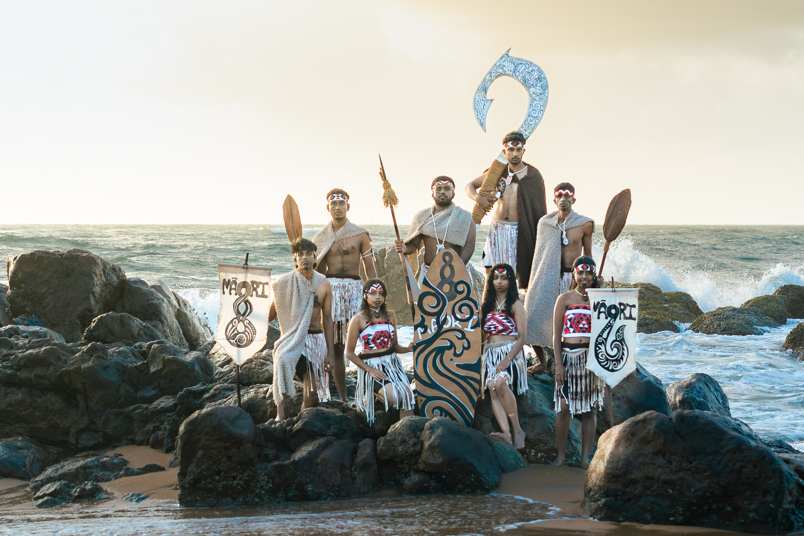
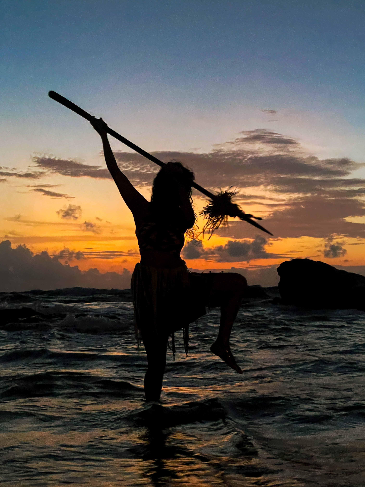
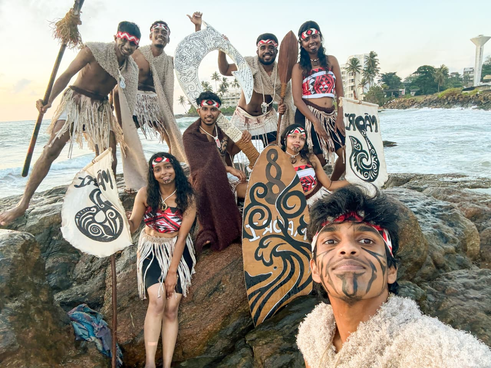
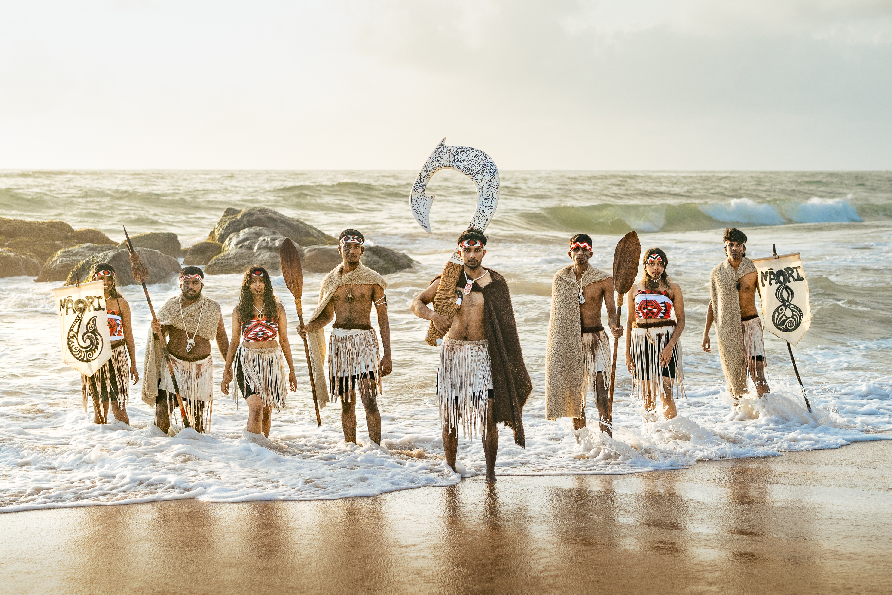
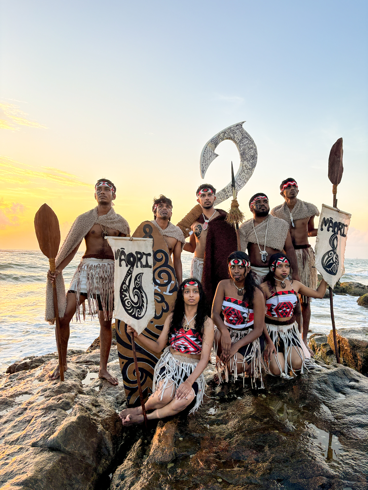
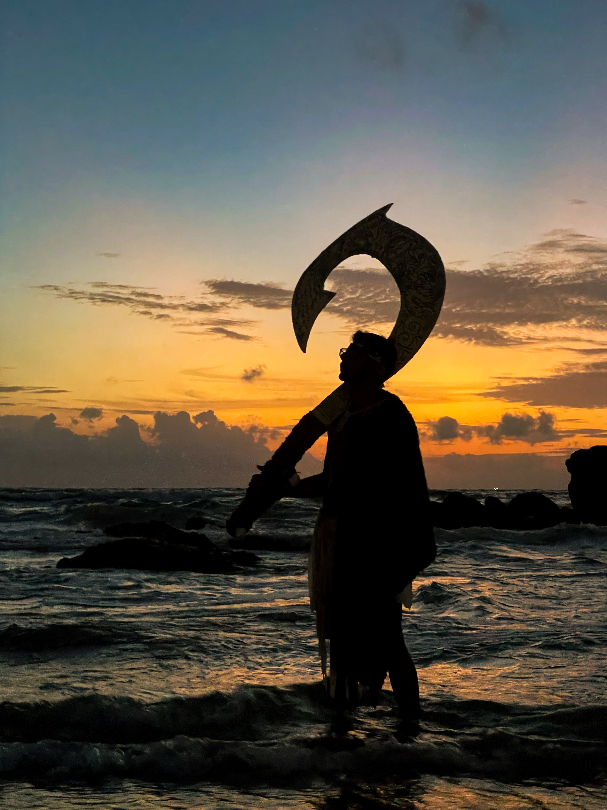
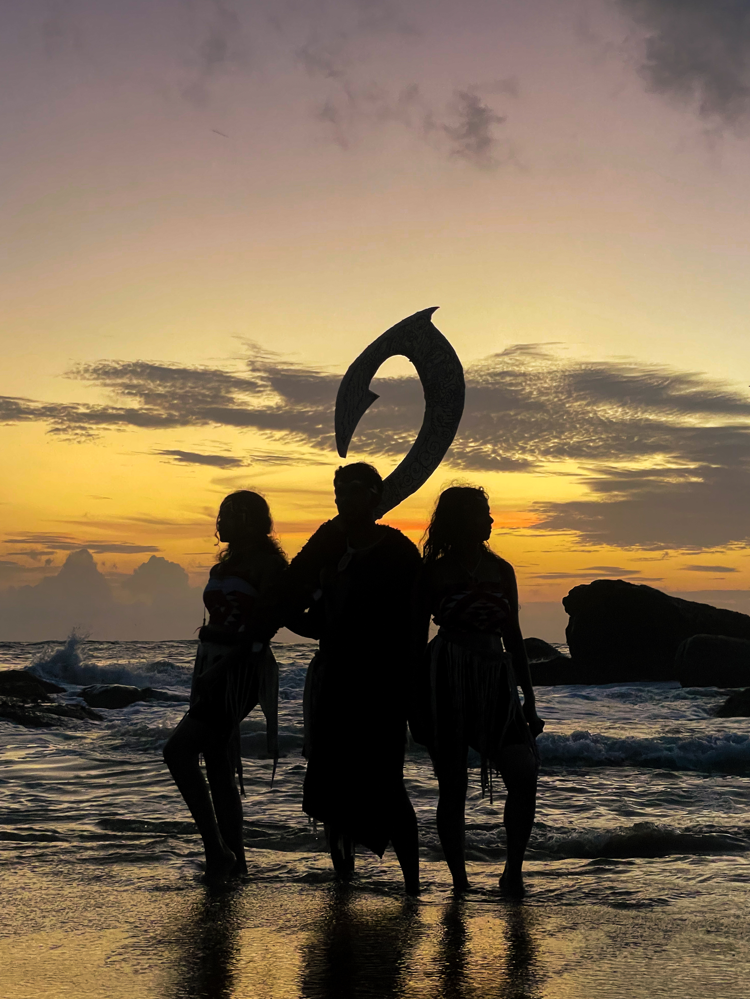
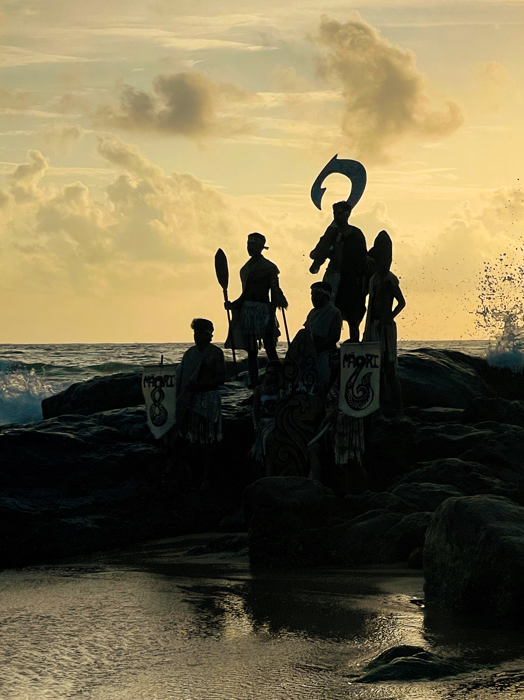
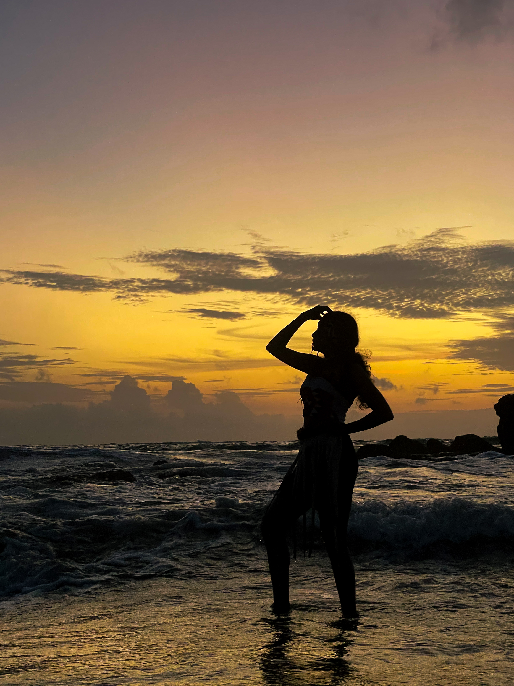

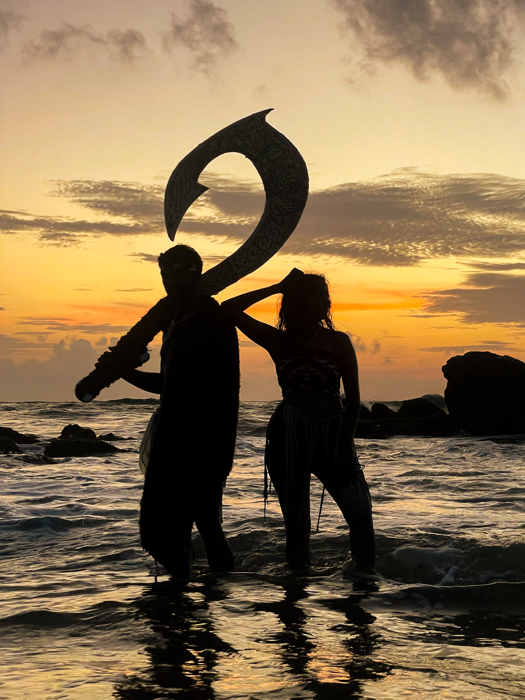

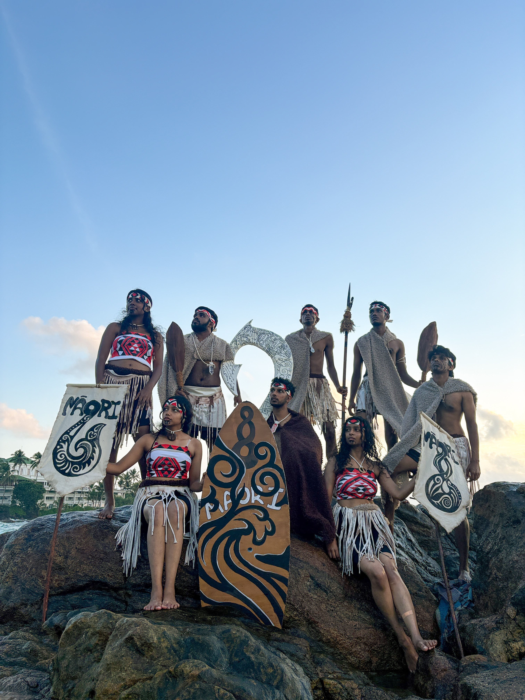
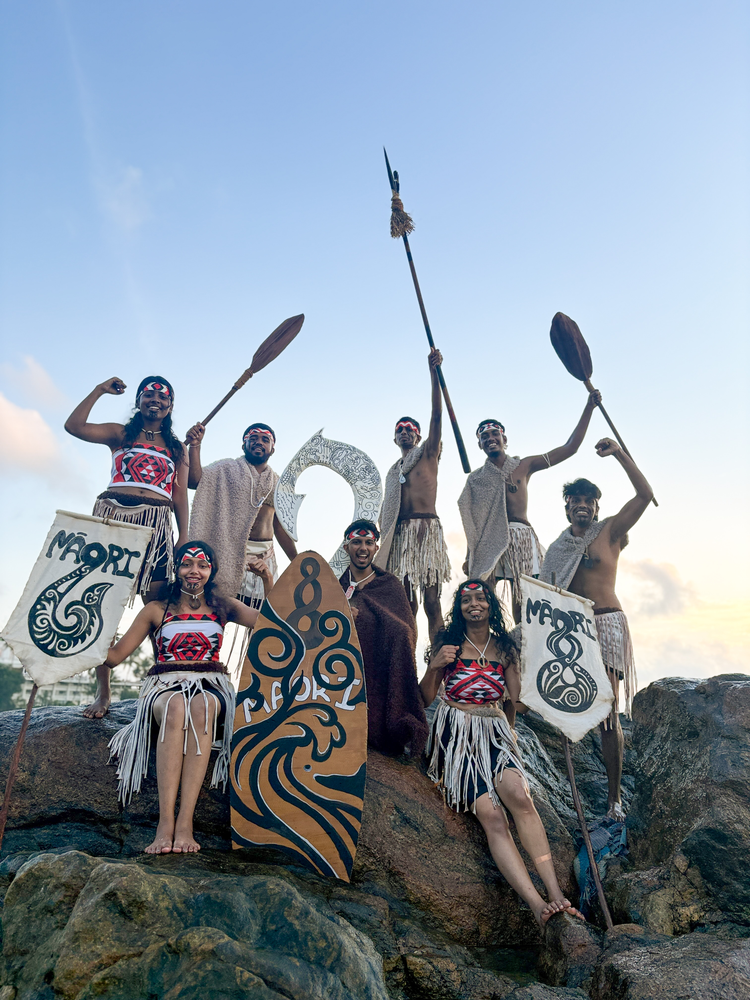
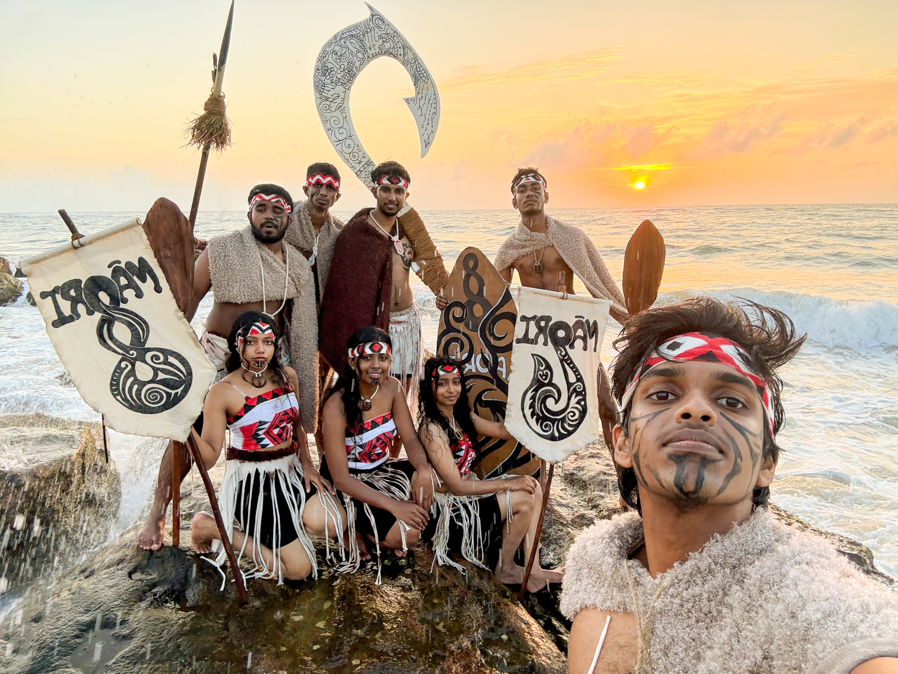
5
Opening our
Facebook post
Facebook post
You made it to the end
Like & follow
to support us.
Thanks for standing with Team Maori. We are taking you to our Facebook post so you can leave a like and follow the Mora Hiking Club page.